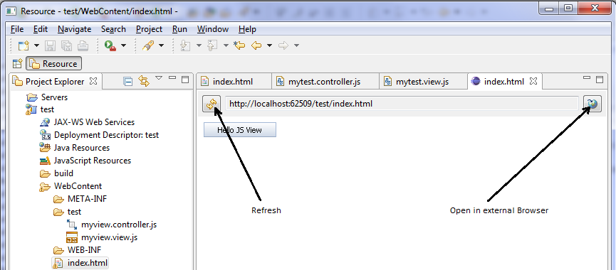

Running an App in the Application Preview
You access the application preview using the Web App Preview, provided with the embedded Jetty server. You can quickly check on your application and open it in the default browser.
Procedure
- To test the new application with the application preview in an embedded Jetty server,
right-click the HTML file or the project node and choose
 Run As
Run As  Web App Preview
Web App Preview  . Everything is configured automatically.
. Everything is configured automatically. - To check the files of your application project in an external browser, choose
Open in external browser on the right hand side of
the preview editor. This function opens the external browser which is specified
in the Eclipse preferences under General Web Browser . This is usually the default browser of your PC. For other
external browsers, you can also copy the URL from the text field of the editor
to the external browser.Depending on the libraries you use, different browsers are supported. For more information, see: Browser and Platform Support
Open in External Browser
NoteBefore deploying a application that has been created by using the Eclipse application development tool on a Java server, ensure to adapt the web.xml file in the <WebContent folder name>/WEB-INF folder of the application by removing the mapping to the test resources. Test resources should only be used during testing. Remove or comment the following lines:
#!xml <servlet-mapping> <servlet-name>ResourceServlet</servlet-name> <url-pattern>/test-resources/*</url-pattern> </servlet-mapping>